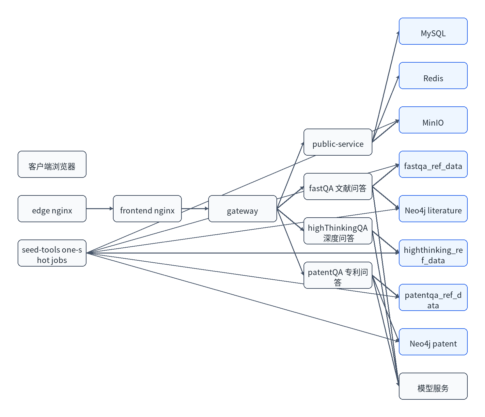

| 版本 | 日期 | 修订人 | 修订说明 |
|---|---|---|---|
| V1.0 | 2026/05/20 | 项目组 | 初版 |
本文档面向部署实施人员和现场运维人员，用于指导 LiFeO4Agent 在目标服务器上的安装、配置、启动、验证、更新和回滚。本文档只说明部署相关工作，不替代测试报告、开发文档和运维手册。
| 项目 | 说明 |
|---|---|
| 系统名称 | LiFeO4Agent |
| 部署形态 | Docker 离线部署，Docker 镜像包 + tar.zst 数据包 + docker compose 编排。 |
| 适用版本 | 文档版本 V1.0，数据包版本 2026-05-19。 |
| 部署目标 | 完成系统服务启动、基础数据导入、HTTPS 访问、管理员登录和三类问答冒烟验证。 |
系统采用容器化微服务部署。前端、网关、公共服务、文献问答、深度问答、专利问答、MySQL、Redis、MinIO、Neo4j 和 seed job 均由 docker compose 编排。业务服务镜像和大体积数据包分离，避免后续单服务更新时重复分发原文、向量库和图谱数据。

当前交付为单机 compose 部署形态。若部署方需要高可用，可在后续方案中将 MySQL、Redis、MinIO 和 Neo4j 替换为部署方统一中间件集群，业务服务可通过外部负载均衡扩展为多实例；本次 V1.0 交付不默认启用高可用集群。
| 资源 | 最低配置 | 推荐配置 | 说明 |
|---|---|---|---|
| CPU | 16 核 | 32 核及以上 | 问答后端、Neo4j 和数据导入会消耗 CPU。 |
| 内存 | 64 GB | 128 GB 及以上 | 专利服务、向量库和图谱查询建议预留充足内存。 |
| 磁盘 | 300 GB 可用空间 | 500 GB 及以上 SSD | 需容纳镜像、数据包、MinIO 导入后对象、Neo4j 数据和日志。 |
| 网络 | 内网可达 | 千兆内网 | 客户端、模型服务和部署机之间应保持稳定连接。 |
| 软件 | 版本要求 | 用途 |
|---|---|---|
| Linux | 主流 64 位 Linux 发行版 | 部署宿主机操作系统。 |
| Docker Engine | 建议 24.x 或以上 | 运行容器。 |
| Docker Compose | Compose v2 | 执行 docker compose 编排。 |
| 浏览器 | Chrome、Edge 或国产兼容浏览器 | 访问前端页面。 |
宿主机不需要安装 mc、zstd、neo4j-admin；这些工具由 seed-tools 镜像或官方 Neo4j 镜像提供。
| 交付物 | 说明 | 部署位置 |
|---|---|---|
deploy/docker-compose.yml | 容器编排文件。 | 部署目录。 |
deploy/.env.production.example | 生产配置模板。 | 复制为 deploy/.env。 |
deploy/lifeo4agent-images.tar | 离线镜像包。 | 通过 docker load 导入。 |
deploy/data/manifest.json | 数据包清单、版本和 sha256。 | 部署目录。 |
deploy/data/*.tar.zst | MinIO 原文和 reference data。 | 部署目录。 |
deploy/data/neo4j-*.dump.zst | 文献和专利图谱 dump。 | 部署目录。 |
deploy/certs/fullchain.pem | HTTPS 证书链。 | 部署目录。 |
deploy/certs/privkey.pem | HTTPS 私钥。 | 部署目录，需限制权限。 |
离线部署时，部署方将镜像 tar 包放到部署机后执行加载命令。
docker load -i deploy/lifeo4agent-images.tar
成功输出参考：
Loaded image: lifeo4agent/gateway:latest Loaded image: lifeo4agent/public-service:latest Loaded image: lifeo4agent/fastqa:latest Loaded image: lifeo4agent/highthinkingqa:latest Loaded image: lifeo4agent/patent:latest Loaded image: lifeo4agent/frontend:latest Loaded image: lifeo4agent/seed-tools:latest
失败输出参考：
open deploy/lifeo4agent-images.tar: no such file or directory
处理方式：确认镜像包路径是否正确，确认文件传输完整。
如部署方使用私有镜像仓库，可按镜像仓库规范登录并拉取。当前离线交付不要求使用在线拉取。
docker login <镜像仓库地址> docker pull lifeo4agent/gateway:latest
成功输出参考：
Login Succeeded latest: Pulling from lifeo4agent/gateway Status: Downloaded newer image for lifeo4agent/gateway:latest
失败输出参考：
Error response from daemon: unauthorized: authentication required
处理方式：检查仓库地址、用户名、密码、网络连通性和镜像 tag。
cp deploy/.env.production.example deploy/.env
成功输出参考：命令无输出，且 deploy/.env 文件存在。
失败输出参考：
cp: cannot stat 'deploy/.env.production.example': No such file or directory
处理方式：确认部署目录完整。
| 配置类别 | 变量 | 说明 |
|---|---|---|
| 访问入口 | HTTP_PUBLISH_PORT、HTTPS_PUBLISH_PORT、HTTPS_SERVER_NAME、HTTPS_REDIRECT_HOST | HTTP/HTTPS 端口和域名。 |
| 基础组件 | MYSQL_ROOT_PASSWORD、MYSQL_APP_PASSWORD、REDIS_PASSWORD、MINIO_ROOT_PASSWORD | 数据库、缓存、对象存储密码。 |
| 业务鉴权 | JWT_SECRET、PUBLIC_SERVICE_INTERNAL_AUTH_TOKEN | 用户 token 和内部服务鉴权。 |
| 数据包 | DATA_PACKAGE_VERSION、DATA_SEED_FORCE | 版本应与 manifest 一致；强制重导默认为 0。 |
| 大模型 | LLM_BASE_URL、LLM_MODEL、LLM_API_KEY | OpenAI 兼容接口或部署方模型网关。 |
| 意图模型 | INTENT_MODEL_ENABLED、INTENT_MODEL_BASE_URL、INTENT_MODEL、INTENT_MODEL_API_KEY | fastQA 和 patentQA 共享。 |
| Embedding | QA_EMBEDDING_*、HIGHTHINKINGQA_EMBEDDING_* | 文献/专利与深度问答分开配置。 |
| Rerank | RERANK_PROVIDER、RERANK_BASE_URL、RERANK_MODEL、RERANK_API_KEY | 不用时 provider 设置为 none。 |
| 参数 | 当前配置方式 | 说明 |
|---|---|---|
| API Key | LLM_API_KEY | 真实密钥只填写在 deploy/.env，不得写入文档。 |
| Base URL | LLM_BASE_URL | 应为 OpenAI 兼容 chat completions 入口所在的 base url。 |
| 模型名称 | LLM_MODEL | 由部署方模型服务提供。 |
| 超时 | LLM_CONNECT_TIMEOUT_SECONDS、LLM_READ_TIMEOUT_SECONDS、LLM_STREAM_READ_TIMEOUT_SECONDS | 共享配置中默认连接 15 秒、读取 180 秒、流式读取 600 秒。 |
| 并发连接 | LLM_MAX_CONNECTIONS、LLM_MAX_KEEPALIVE_CONNECTIONS | 共享配置默认最大连接 160、保活连接 64。 |
| 温度和最大 token | 按服务内部默认值控制 | 文件问答等局部能力使用内部默认值，例如 top_p 0.95、max_tokens 2500 左右。 |
数据包必须放在 deploy/data 下。当前 manifest 记录的数据版本为 2026-05-19。
bash deploy/scripts/preflight_check.sh deploy/.env
成功输出参考：
ok: data package manifest and sha256 validated with python ok: docker image present: lifeo4agent/gateway:latest preflight check passed
失败输出参考：
missing required data package: deploy/data/minio-originals.tar.zst
处理方式：补齐数据包，或检查 DEPLOY_DATA_DIR 是否指向正确目录。
docker compose --env-file deploy/.env -f deploy/docker-compose.yml up -d
成功输出参考：
Container lifeo4agent-mysql Healthy Container lifeo4agent-redis Healthy Container lifeo4agent-minio Started Container lifeo4agent-minio-seed Exited Container lifeo4agent-gateway Started Container lifeo4agent-edge Started
失败输出参考：
Error response from daemon: driver failed programming external connectivity on endpoint lifeo4agent-edge: Bind for 0.0.0.0:443 failed: port is already allocated
处理方式：修改 HTTPS_PUBLISH_PORT 或释放宿主机 443 端口。
docker compose --env-file deploy/.env -f deploy/docker-compose.yml ps
成功输出参考：
NAME STATUS lifeo4agent-mysql Up (healthy) lifeo4agent-redis Up (healthy) lifeo4agent-gateway Up lifeo4agent-edge Up lifeo4agent-minio-seed Exited (0)
失败输出参考：
lifeo4agent-neo4j-patent Restarting
处理方式：查看对应服务日志，优先检查数据卷、密码和 seed job。
curl -k -I https://<部署域名>:<HTTPS端口>/
成功输出参考：
HTTP/2 200 server: nginx
失败输出参考：
curl: (7) Failed to connect to <部署域名> port <HTTPS端口>
处理方式：检查域名解析、服务器防火墙、端口映射和 edge 容器状态。
部署脚本会在空数据库初始化时创建 bootstrap 管理员账号。管理员用户名为 admin，初始密码由交付渠道单独确认，不在本文档记录。首次登录后应立即修改密码并设置安全问题。
如果只修改 fastQA，则只需要导入 fastQA 新镜像并重启该服务。
docker load -i lifeo4agent-fastqa-update.tar docker compose --env-file deploy/.env -f deploy/docker-compose.yml up -d fastqa
成功输出参考：
Loaded image: lifeo4agent/fastqa:20260520 Container lifeo4agent-fastqa Started
失败输出参考：
No such service: fastqa
处理方式：确认 compose 文件版本和服务名是否一致。
更新原文、向量库或图谱时，需要替换 deploy/data 中的数据包和 manifest，并同步修改 DATA_PACKAGE_VERSION。同版本 marker 存在时会跳过导入；需要重导时设置 DATA_SEED_FORCE=1，完成后改回 0。
docker load 后启动对应服务。deploy/.env，执行预检后重启受影响服务。| 问题 | 典型日志或现象 | 解决方法 |
|---|---|---|
| 端口冲突 | port is already allocated | 修改 deploy/.env 中对应发布端口。 |
| 数据库连接失败 | Access denied for user 或服务健康检查失败。 | 检查 MySQL 密码、数据库初始化和 compose 环境变量。 |
| MinIO 导入失败 | package not found、AccessDenied | 检查数据包路径、MinIO 账号密码和 bucket 初始化。 |
| 向量库不存在 | 后端日志出现 chroma.sqlite3 路径错误。 | 检查对应 *-ref-seed 是否 Exited (0)。 |
| 模型 400 错误 | 模型接口返回参数不兼容。 | 检查模型是否支持 OpenAI 兼容格式、stream、thinking 参数。 |
| HTTPS 证书错误 | 浏览器提示证书不受信或域名不匹配。 | 确认证书 SAN、域名解析和客户端信任链。 |
部署目录中的 deploy/data/manifest.json 是数据包验收依据。V1.0 数据版本为 2026-05-19，各数据包由 seed job 自动导入，部署人员不需要手工解压。
| 数据包 | 文件名 | 大小 | 关键内容 | 导入目标 |
|---|---|---|---|---|
| MinIO 原文 | minio-originals.tar.zst | 约 49.3 GiB | 论文 7153 篇、专利目录 14006 个、专利 tables 9581 个。 | MinIO bucket。 |
| fastQA reference | fastqa-ref.tar.zst | 约 4.09 GiB | 文献主向量库、MD 向量库和索引文件。 | fastqa_ref_data volume。 |
| highThinking reference | highthinking-ref.tar.zst | 约 0.96 GiB | 深度问答 vectordb。 | highthinking_ref_data volume。 |
| patentQA reference | patentqa-ref.tar.zst | 约 1.89 GiB | 两个专利向量库、JSON-only patent archive，不含 PDF/PNG 原文。 | patentqa_ref_data volume。 |
| public-service reference | public-service-ref.tar.zst | 约 10 KiB | 公共服务轻量 vector database。 | public_service_ref_data volume。 |
| 文献图谱 | neo4j-literature.dump.zst | 约 175 MiB | 文献知识图谱 dump。 | neo4j_literature_data volume。 |
| 专利图谱 | neo4j-patent.dump.zst | 约 462 MiB | 专利知识图谱 dump。 | neo4j_patent_data volume。 |
| 序号 | 检查项 | 通过标准 | 失败处理 |
|---|---|---|---|
| 1 | Docker 服务 | docker version 正常返回。 | 启动 Docker 或联系系统管理员。 |
| 2 | Compose 命令 | docker compose version 正常返回。 | 安装或升级 Compose v2。 |
| 3 | 磁盘空间 | Docker 数据目录和部署目录空间满足数据导入要求。 | 扩容或迁移 Docker 数据目录。 |
| 4 | 端口占用 | HTTPS、HTTP、MySQL、Redis、MinIO 端口未冲突。 | 修改 deploy/.env 发布端口。 |
| 5 | 证书文件 | fullchain.pem 和 privkey.pem 存在。 | 由客户证书体系签发或使用内网自签证书。 |
| 6 | 数据包 | manifest 和所有 tar.zst/dump.zst 文件存在。 | 重新传输数据包。 |
| 7 | 模型连通 | 部署机或容器可访问 LLM、embedding、rerank、intent 服务。 | 检查内网路由、防火墙和模型网关。 |
| 验证项 | 命令或操作 | 成功结果示例 | 异常结果示例 |
|---|---|---|---|
| Compose 展开 | docker compose --env-file deploy/.env -f deploy/docker-compose.yml config --images | 列出 lifeo4agent/gateway、lifeo4agent/frontend 等镜像。 | 提示变量未定义或 YAML 语法错误。 |
| 容器状态 | docker compose --env-file deploy/.env -f deploy/docker-compose.yml ps | 长期服务 Up，seed job Exited (0)。 | 容器 Restarting 或 seed job 退出码非 0。 |
| HTTPS 首页 | curl -k -I https://域名:端口/ | 返回 HTTP/2 200 或 HTTP/1.1 200。 | 连接失败、证书域名不匹配、502。 |
| 网关健康 | curl -k https://域名:端口/healthz | 返回健康状态。 | 404 或 502，需检查 nginx 路由。 |
| MinIO 对象 | 登录 MinIO 控制台检查 bucket。 | 存在 papers/ 和 patent/originals/。 | bucket 为空或 tables 缺失。 |
| 管理员登录 | 浏览器登录 admin。 | 进入管理后台或首次安全设置页。 | 账号不存在，检查 MySQL 初始化日志。 |
| 三类问答 | 分别发起文献、深度、专利问题。 | 返回答案、阶段耗时和引用。 | 模型 400、向量库路径错误或配额失败。 |
每次上线或更新后，应在现场交付记录中补充以下内容，便于后续回滚和审计。
| 字段 | 填写说明 |
|---|---|
| 变更日期 | 记录实际部署日期和时间窗口。 |
| 变更内容 | 记录更新的镜像、数据包、配置或证书。 |
| 执行人员 | 记录部署方和实施方人员。 |
| 验证结果 | 记录健康检查、登录、问答和原文验证结果。 |
| 回滚材料 | 确认上一版本镜像、配置和数据库备份是否可用。 |